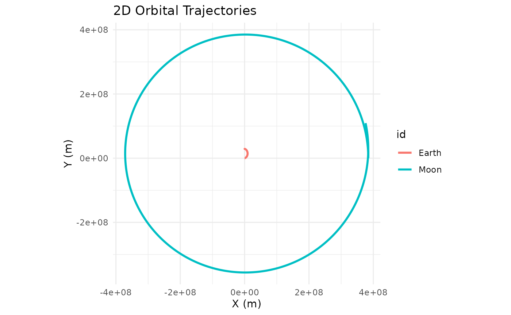

library(orbitr)
#>
#> Attaching package: 'orbitr'
#> The following object is masked from 'package:stats':
#>
#> simulateorbitr ships a set of real-world masses, distances, and
orbital speeds so you don’t have to Google them every time. All values
are in SI units (kg, meters, m/s).
Masses
mass_sun # 1.989e30 kg
mass_earth # 5.972e24 kg
mass_moon # 7.342e22 kg
mass_mars # 6.417e23 kg
mass_jupiter # 1.898e27 kg
mass_saturn # 5.683e26 kg
mass_venus # 4.867e24 kg
mass_mercury # 3.301e23 kgOrbital Distances (Semi-Major Axes)
distance_earth_sun # 1.496e11 m (~149.6 million km)
distance_earth_moon # 3.844e8 m (~384,400 km)
distance_mars_sun # 2.279e11 m
distance_jupiter_sun # 7.785e11 m
distance_venus_sun # 1.082e11 m
distance_mercury_sun # 5.791e10 mMean Orbital Speeds
speed_earth # 29,780 m/s
speed_moon # 1,022 m/s
speed_mars # 24,070 m/s
speed_jupiter # 13,060 m/s
speed_venus # 35,020 m/s
speed_mercury # 47,360 m/sUsing the Constants
This means the Earth-Moon example can be written as:
create_system() |>
add_body("Earth", mass = mass_earth) |>
add_body("Moon", mass = mass_moon, x = distance_earth_moon, vy = speed_moon) |>
simulate(time_step = 3600, duration = 86400 * 28) |>
plot_orbits()
Why “Distance” Constants Are Semi-Major Axes
Orbital distances are not truly constant — every orbit is an ellipse, so the separation between two bodies changes continuously throughout each revolution. The values provided here are semi-major axes: the average of the closest approach (periapsis) and the farthest point (apoapsis).
The semi-major axis is the single most characteristic length scale of an elliptical orbit. It determines the orbital period via Kepler’s Third Law, and when paired with the mean orbital speed, it produces a near-circular trajectory that closely approximates the real orbit. For example, the Earth-Sun distance varies from about 147.1 million km in January (perihelion) to 152.1 million km in July (aphelion). The semi-major axis of 149.6 million km sits right in the middle and gives the correct one-year orbital period.
If you want an elliptical orbit instead, start the body at periapsis with a faster-than-mean velocity, or at apoapsis with a slower one.